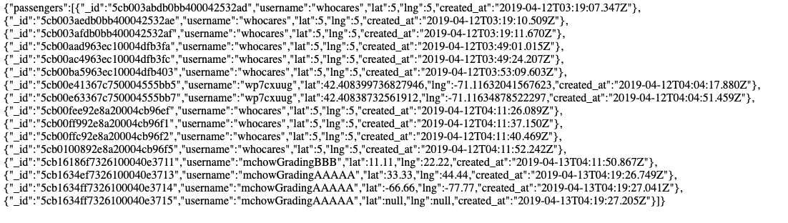
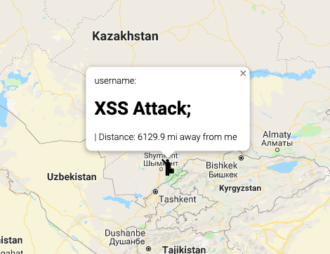

The product that I am testing today is a server-side, web application hosted on heroku that uses the Node.js and Express web frameworks.The server is supposed to maintain and serve locations of passengers and vehicles (with username, latitutde, and longitude) for a long period of time. The server uses a MongoDB to store the data.
I was hired to find and document any security vulnerabilities that I was able to locate in the web application. These may include, but are not limited to, database injection, XSS, or bad programming practices.
My approach was to start with the two forms of attacks that I am most familiar with - database injection and XSS. I started with a "black-box" approach, not looking at the source code for the product. Once I had successfully implemented those two attacks without looking at the product's source code, I moved on to scanning and looking over the code itself for possible security risks. Enabling CORS immediately stuck out to me.
The two main risks that I have identified with the product invovle exposure and potential manipulation of sensistive data and the potential for the product to sending malicous viruses to users computers. The third security risk that I identified is merely a lack of proper use of a built in security feature. While the product does have some extreme security risks, they can easily be preveneted wih the right code.
The first attack I performed was a database injection. The page where this issue was found is in the /passengers.json html page. I would call this a high-security issue, as data with the live/current location of clients using the product can be available to anyone with malicious intent. I knew that the "/passengers.json" page accepted a query, so I simply entered query information that would make the statement true, thus returning all data that satisfied the true condition. A screenshot of the data is shown below.
This can be resolved by validating the query information from the get request. Express has a "validator" package that would be very helpful here.
I successfully implemented an XSS attack with html tags on the product. The problem was in the post route to "/rides". I would call this a medium prioirty issue because I think a javascript XSS attack would be much more dangerous than an html XSS attack. With html, all the attacker can really do is load/show content. With javascript, the attack could be much more dangerous by pulling information from cookies, or recording user keyboard strokes, etc.
I started by putting the product in my assignment 2 map. And then I did the post request with some html text for the "username" parameter. Then, once I loaded my map, the marker showed the html text in the pop-up window where the username would normally be. A screenshot is shown below.
The way to prevent these types of XSS attacks is to remove the ability for data to be interpreted as code. One way to do this would be to change the angle brackets, thus the angle brackets in the attack won't be interpreted as code.
The third security issue that I found was by doing a "white-box" search through my partners code. It is a case of bad-programming practice. The issue is located in the post route of the web-server. By using the '*' argument for "Access-Allow-Origin-Control" as part of the CORS policy, any site can submit a post request. The code is shown below.
I would describe this is a high-priority risk because it allows for any potential attacker anywhere to submit XHR requests. If CORS wasn't enabled, then attack2 would not even be possible to commit. The way to prevent this is to use some sort of authorization or authentication scheme to only allow select domains to send an XHR request and interact with the post route of the server.
In conclusion, there are minimal preventative secrity measures to guard against possible attacks. Two of the most common, yet easiest to prevent, web-based attacks are relatively easy to perform on the product. I'm sure there is much more that I have not even listed. That being said, I have provided suggestions for how to prevent against each attack in the section above. One of the costs of un-enabling CORS however, is that a significant amount of overhead must be added to properly distribute authentication schemes to all users who are interested in using the product.
* My partner - Craig Neubieser
* XSS - https://www.veracode.com/security/xss
* CORS - https://stackoverflow.com/questions/9713644/when-is-it-safe-to-enable-cors/9725695#9725695
* Database Injection - https://sites.google.com/site/iasoncs/home/database-security/nosql-injection